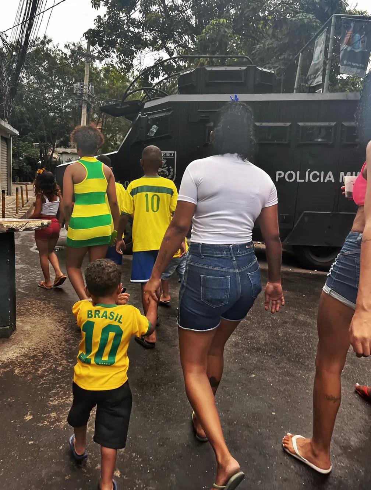

De acordo com esses estatísticos, o Brasil tem 63,6% de avançar diante da Croácia nas quartas de final. O placar mais provável seria o 1 a 0. Além disso, os números apontam que a Seleção tem 21% de chance de conquistar o hexa – essa previsão era de 16% nas oitavas. Os outros favoritos seriam Argentina (16,4%), Franca (14,5%), Inglaterra (14,1%) e Portugal (12,6%).
O software desenvolvido pode ser acessado no site previsaoesportiva.com.br e foi criado por pesquisadores do Instituto de Ciências Matemáticas e de Computação (ICMC) e Centro de Ciências Matemáticas Aplicadas à Indútria (CeMEAI) da USP de São Carlos, Universidade Federal de São Carlos (UFSCar), Universidade Federal da Bahia (UFBA), Universidade Federal do Paraná (UFPR) e Universidad de Atacama, além da FLAI Inteligência Artificial.
O técnico do Brasil, Tite, defendeu nesta quinta-feira (8) as danças dos jogadores nas comemorações de gols durante a Copa do Mundo de 2022, no Catar. E avisou que, se houver a oportunidade, deve voltar a comemorar com os atletas. As danças ganharam repercussão após críticas do ex-jogador irlandês Roy Keane, atualmente comentarista na TV britânica. Ao longo da vitória do Brasil por 4 a 1 sobre a Coreia do Sul nas oitavas de final, Keane disse que as manifestações eram “desrespeitosas”.
Tite chegou a dançar em uma das comemorações, no gol de Richarlison contra os sul-coreanos. Em entrevista coletiva, o treinador disse que a participação na celebração faz parte de “uma conexão com uma geração jovem”. “Eu quero ter a conexão do meu trabalho com as pessoas que se identificam comigo, com quem se identifica com o trabalho”, afirmou o treinador da seleção brasileira. “Eu tenho 61 anos, com atletas de 25, 22, 23, que podem ser quase que meus netos, e eu gero uma conexão com eles. Entre a equipe que eu trabalho, aqueles que verdadeiramente me conhecem, que sabem o bastidor, e outros que não me conhecem, eu prefiro dar a valor a ela. Se tiver que dançar, eu vou dançar”, acrescentou. Tite evitou citar Roy Keane de maneira nominal para responder as críticas do comentarista. Mas deixou claro na coletiva que está ao lado dos jogadores.
Nesta Copa do Catar, o jornalista Martin Schibbye e a designer Brit Stakston, ambos suecos, decidiram lançar o projeto "Cards of Qatar" (Cartas do catar, em tradução livre), em que substituem os jogadores pelos trabalhadores mortos enquanto trabalhavam para construir a infraestrutura deste Mundial de 2022.
"Trata-se de uma coleção de histórias apresentadas em formato de figurinhas que se parecem às do tradicional álbum da Panini, essas que a gente coleciona em todas as Copas do Mundo desde que eu era criança – a gente se acostumou a colecionar jogadores, seleções, países. Mas, antes desta Copa do Mundo, houve um grande debate sobre números, estatísticas, sobre quantos morreram na construção, para que esta Copa do Mundo fosse possível", explica à RFI o jornalista Martin Schibbye, criador do projeto Cartas do Catar, que reúne 70 histórias de trabalhadores, publicadas desde junho deste ano. O jornalista explica que não se trata de boicotar a Copa do Catar, mas de manter viva esta memória de explorações para que elas não voltem a acontecer.
Não basta uma vitória improvável sobre um rival "vizinho": é preciso também tomar as ruas e praças das principais cidades do time derrotado. Foi assim que milhares de marroquinos que vivem em Madri e Barcelona, as duas maiores cidades da Espanha, celebraram na noite de terça-feira (6) a inesperada vitória de sua seleção sobre a espanhola.
O streamer Casimiro Miguel transmitirá gratuitamente 22 jogos da Copa do Mundo de 2022, disputada no Catar, em seus canais na Twitch e no YouTube (com o perfil "CazeTV", criado especificamente para o Mundial) começando neste domingo (20), às 13h. Internautas poderão assistir um jogo por dia, ao vivo, até a decisão da competição, que vai até 18 de dezembro. Além de todos os jogos da Seleção Brasileira, outras nove partidas tiveram exibição confirmada pelo influenciador, que foi eleito “Personalidade do Ano” no último Prêmio eSports Brasil.
Casimiro sempre realiza transmissões de futebol em seu canal na Twitch, "Casimito". Embora os usuários geralmente tenham que pagar uma inscrição mensal de R$ 7,90 para assistir às lives das partidas do Campeonato Brasileiro no canal do streamer, o sinal ficará aberto para todos durante a Copa do Mundo de 2022. Outra novidade é que, agora, ele também reagirá às partidas ao vivo no YouTube.
Para a Copa de 2022, Bruno diz que o clima de festa, registrado em outros mundiais, está mais contido. São poucas as ruas enfeitadas ou pintadas, e o moradores também estão tendendo a ficar mais dentro de casa. “Acho que só a Rocinha está mais enfeitada. Em outros lugares está mais difícil. Acho que a questão política afastou um pouco, polarizou muito e demorou para o pessoal animar. Em outras Copas, as pessoas estavam mais motivadas a torcer no beco, na rua”, diz.
Outro motivo para o desanimo está na violência, que não aplacou nas comunidades cariocas desde o último mundial. Bruno, que além de fotografar em favelas, é morador o Jacarezinho, na Zona Norte do Rio, tem bem a noção desse fator que dificulta viver esse momento de alegria. “Agora mesmo tem um caveirão na entrada do Jacarezinho. Já convivíamos com o Cidade Integrada, com o Bope e o Choque desde o início do ano, mas, com os confrontos da semana passada, chegou esse blindado. Enquanto na Rocinha, Penha e Alemão tem telão. No Jacarezinho tem caveirão”, diz ele que fez o registro do que é torcer na Copa em meio à guerra que acontece nas favelas. “Vai do amor pela Seleção à tensão pelo caveirão, resume
